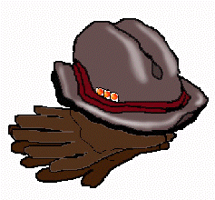

July 24 Ali
THE NATION EXPANDED AND EXCEEDED its capacity to furnish
the young bastards with uncharted terrain. Even so, they migrated like lemmings until it
looked like the time for finally a cliff. Kesey and his rogues called
the shot when they laid out the destination for this hapless trip:
FURTHUR. Butit couldn't be done with trucks, no how. And it couldn't
be done with drugs, not yet.
They offered me girls, money, and drugs. But the real initiative to
play this game a little dirtily was my country (concept). I'd given up
on ambition, as such the country (people) wasn't ready for any
illuminated excursions into the wonder of what pharmacology had wrought.
Having tried educational, philanthropic, and scientific societies, I
understood that subterfuge would be the
real means of accomplishing extradition of the irresponsible element in a
nation's manifest destiny.


 pssst. . .sign the
guestbook!
pssst. . .sign the
guestbook!